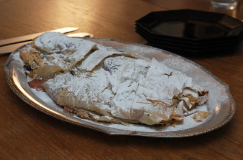

| Zutaten für 4 Personen: | |
| Teig | |
| 250 g | Mehl |
| 1,5 dl | Wasser |
| 1 EL | Öl |
| 1/2 TL | Salz |
| Füllung | |
| Butter | |
| 100 g | Gemahlene Haselnüsse |
| 50 g | Brösmeli oder Paniermehl |
| 50 g | Sultaninen |
| 750 g | Zwetschgen |
| 120 g | Zucker und Puderzucker |
Das Mehl mit dem Salzwasser anrühren, das Öl beigeben und einen geschmeidigen Teig zubereiten. Kneten und den Teig etwa 1 Stunde ruhen lassen. Oder Schummeln und den fertigen Strudelteig in der Migros kaufen....
Zwetschgen entsteinen und in kleine Schnitze schneiden.
Den Teig hauchdünn auswallen, zuletzt über dem Handrücken ausziehen und auf ein bemehltes Küchentuch legen.
Die ganze Teigfläche mit flüssiger schwach gebräunter Butter bestreichen.
Nüsse, Brösmeli, Sultaninen, Zwetschgen und Zucker darauf verteilen.
Die Teigränder einschlagen und den Strudel mit Hilfe des Tuches aufrollen.
Auf das gefettete Blech (sprich Backtrennpapier) geben und bei guter Hitze (180°C) 40 bis 50 Minuten backen.
Während der Backzeit öfter mit flüssiger Butter bestreichen.
Vor dem Servieren mit Puderzucker bestreuen.
Herbert Eigenmann, Code: ZWD
Gelang mir am 30.12.2008 nicht so toll. Ich habe die Strudelteigblätter gekauft sowie gefrorene Zwetschgen. Auch habe ich das Paniermehl vergessen. Beim Zusammenrollen riss mir der Teig. Da habe ich halt noch ein Studelteigblatt darauf gepappt. Der Strudel kam dann aber bei den Gästen sensationell gut an. RE
@LINKBACK_TAG@ @WAKELOCK@